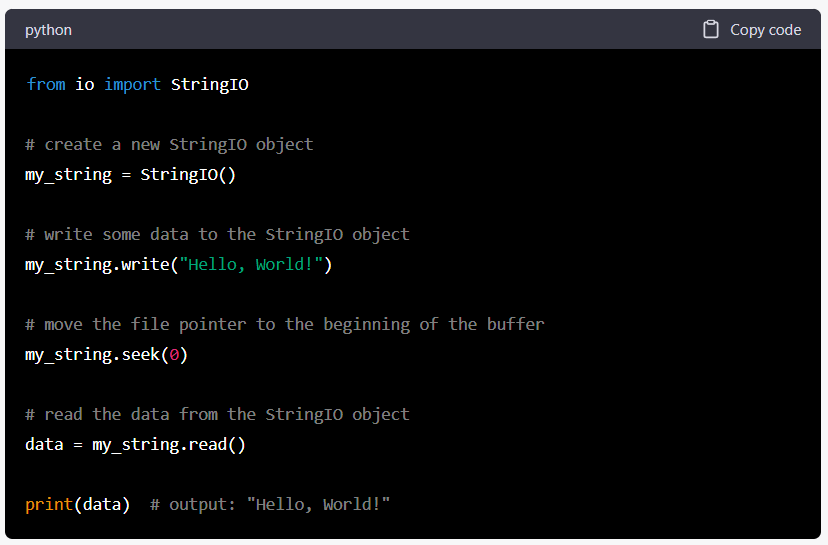

My Tech Notes
Click on any of the pages on the left to begin...
1 | |
Python
What is Python?
- Python is a general purpose programming language (its good at a lot of things).
- Its one of the most readable languages that exist. It also has one of the biggest communities which means there are a lot of people and resources to learn.
- Python is an interpreted language, there is no compiling required.
- Python is a dynamic language, no need to declare data types.
- There are several flavors of python, some of the most popular are:
- CPython - the typical, most common, flavor of python. This is usually what people refer to when they say "python". This is written in the C programming language and maintained by a large group of individuals.
- Jython - Instead of the C language, this flavor of python is written in Java.
- IronPython (aka IPython) - Instead of the C language, this flavor of python is written in .NET.
- Anaconda - This flavor of python comes with many common data analysis packages pre-installed. This is maintained by the Anaconda, Inc. company. Personally I think this is just CPython with bloat.
- PyPy - A fast, minimal version of python that uses a JIT compiler. A little more difficult to configure.
- Brython - A version of python that can run in a web browser, translating python code into JavaScript.
How to use Python
Summary Steps
- Create a virtual environment (venv).
- pip install any libraries to the venv.
- Write code in a .py file
- Run the .py file with the venv.
Example:
1 2 3 4 5 6 7 8 9 10 11 | |
Running Python
1 2 3 4 5 6 7 | |
- Python files end with
.pyfor examplenew_file.py. Notice all lowercase and underscore format. Python heavily uses this snake case formatting. - In your
.pyfile, write python code and then run it through the interpreter by using the terminal. - Reference the interpreter and then the .py file like the example below.
- Example:
C:\username\python\bin\python.exe path\to\your\python\file.py - Note you'll modify this to the correct paths on your computer.
About the package manager (pip)
- The python community has a place where people can create and upload their own python packages. https://pypi.org/
- Python has a built-in manager that allows you to install packages from PyPI directly. This manager is called
pip - There are many very popular libraries. Some popular and well utilized ones are:
- For data there is Pandas, SQLAlchemy, DuckDB, Polars
- API handling - Requests, aiohttp
- Markup parsing - BeautifulSoup4, lxml
- Web servers - Flask, Django, FastAPI
- File transfer - Paramiko (SFTP)
- Environment variable usage - python-dotenv
- So much more...
- To make use of these, we need to use
pipto install them into our python interpreter. But we don't want to install everything to the same python interpreter. That would cause it to become bloated if every project used the same interpreter. For this reason, every python project should have its own interpreter (see Best practices for using python)
Best practices for using python
- Every python project should have its own interpreter, called a virtual environment or shortened to "venv". To do this, we need to create a copy of the python interpreter for each project. PyCharm can manage this for you, or you can do it manually. If using PyCharm, you can skip to the pip commands.
- To do this manually, you should use the terminal to navigate to the folder your project files will exist in and type
python -m venv venvThis runs a python built-in command (python) in module mode (-m) to run the module venv (venv) and names the new interpreter venv (venv). - After you create the venv folder with the command, you'll need to activate it to install the libraries. To activate,
run the command
venv\Scripts\activate. For linux or mac the command isvenv/bin/activate. - From here you should see the terminal change to
(venv) C:\users\username\directory. In PyCharm, you can open the terminal and this will already be setup. - Now you can run pip commands like:
pip install pandas- install a package by using their PyPI name.pip install pandas sqlalchemy duckdb- you can install more than one by chaining package names.pip uninstall pandas- uninstall package by PyPI name.pip install --upgrade pandas- upgrade already installed packages when a new version comes out.pip list- show a list of installed packages.pip freeze > requirements.txt- save the names and versions of installed packages to a file. Good for saving and distributing dependencies so others can clone and use your project.- Use the venv the same way
C:\path\to\venv\python\bin\python.exe path\to\your\python\file.py. PyCharm will automatically use these commands when you right-click and run a script.
Writing Python Code
Python uses white-space and tabs, instead of curly-braces and semicolons like other common languages.
The simplest python script. This will print text to your terminal window.
1 | |
Data Types
Native data types in python include:
- Integer
int- whole number ie: 5 - Float
float- decimal number ie: 7.9 - String
str- text surrounded by single or double quotes ie: 'This is a string' or "This is a string" - List, Tuple
list, tuple- grouped data combined into a collection that can be iterated over. Lists use square brackets ie: a list of integers[1, 2, 3, 4]. Tuples use parenthesis ie:(1, 2, 3, 4). Lists can be mutated and tuples cannot. - Dictionary
dict- key value pair collection of data, using curly-braces. ie:{'key 1': 'value 1', 'key 2': 'value 2'}
Dictionary methods:
- Get value from dictionary
dict_name['key_name']'ordict_name.get('key_name') - Loop through the dict with:
1 2
for k, v in dict_name.items(): print(k, v)
String methods:
- f-strings - inject variables into a string with curly braces
print(f'Variable = {x}') - Combine iterable into string
''.join(iterable)
Variables
Any of the data types can be loaded into a variable that can then be referenced later:
1 2 3 | |
Variables can be named almost anything, you just can't start a variable with a number and no special characters.
You can perform mathematical operations, just like most programming languages.
1 2 3 4 5 6 7 8 | |
You can also use the math library in the python standard library to perform more complex mathematical functions.
If Statements
If statements are great for checking conditions and running code if certain conditions are met.
1 2 3 4 5 6 7 | |
Keep in mind that checking equality should be done with two equal signs == because a single = is for assigning variables.
1 2 3 4 | |
Loops
Types of loops: - For - iterate over an object. - While - loop until a condition is met. - List comprehension - single line loop over an object.
For loop
1 2 3 4 | |
While loop
1 2 3 4 5 | |
List comprehension - this is like a single line for loop
1 2 3 4 | |
Comments
Add comments to your code:
#- single line comments""" """- multi-line comments
1 2 3 4 5 6 7 | |
Importing other libraries
Python comes with the "Python Standard Library" which has a lot of powerful modules ready to go, no installing required.
To use any of these, or to use any libraries installed with pip, they must be imported. This is typically done at the top of the .py file.
1 2 3 | |
Load a csv file into a DataFrame using pandas.
1 2 3 | |
Connect to a database with sqlalchemy:
1 2 3 4 5 6 7 8 9 10 | |
Functions
Use the def keyword to define a function. You can use parameters to pass data into the function, process the data, and return a result.
1 2 3 4 5 6 7 8 9 10 | |
You can create dynamic parameters using args and *kwargs
1 2 3 4 5 6 | |
Classes
Classes are good for grouping similar data and functions into one object. It's great for maintaining state of data, and performing certain operations on that data.
1 2 3 4 5 6 7 8 9 10 11 12 13 14 15 16 17 18 19 20 21 22 23 24 | |
Building Large Projects
Large python projects can be extremely powerful, but they must be organized a certain way to work properly.
A project should always start with a root folder and other folders and files will be housed inside the root folder.
The file structure of a project might look something like this:
1 2 3 4 5 6 7 8 9 10 11 12 13 | |
Notice other directories have a file called __init__.py. This is a python file that tells python "this folder is
a python module" which means you can put python files with code inside the folder and use it. With this structure,
you have code in the views.py file like:
1 2 | |
If there is code in the __init__.py file, you can just import the module name like import db. If there is
a function inside the __init__.py file called new_func you could from db import new_func
Advanced Topics
Dynamic Function Parameters
If you have a function and you want to be able to pass any number of arguments or keyword arguments, you can use args and kwargs.
1 2 3 4 5 6 | |
You can also unpack dictionaries directly into a function call.
1 2 3 4 5 | |
Context Managers
In programming there are a lot of instances where you'll need to open something (file, database connection, etc.) and you'll need to make sure to close it to free up resources and to protect the file from being corrupted or altered.
A very safe way to handle this is with context managers, using the with keyword.
Read, write, append to files.
1 2 3 4 5 6 7 8 9 10 11 12 13 14 15 16 17 | |
Safely manage connections to a database.
1 2 3 4 5 6 | |
You can create your own objects with context managers.
1 2 3 4 5 6 7 8 9 10 11 | |
Decorators
Decorators are a way to add extra functionality to other functions.
1 2 3 4 5 6 7 8 9 10 | |
To use this defined decorator, it would look something like this:
1 2 3 | |
If you've defined the decorator to also take arguments, you can add them:
1 2 3 4 5 6 7 8 9 10 11 12 13 14 15 16 17 | |
Here is a more in-depth tutorial on decorators https://realpython.com/primer-on-python-decorators/
Some favorite decorators:
1 2 3 4 5 6 7 8 9 | |
1 2 3 4 5 6 7 8 9 10 11 12 13 14 15 16 17 18 19 20 21 22 23 24 25 26 | |
Generators
Generators can be thought of as iterables that are not fully loaded into memory. This allows you can handle the same data, without worrying about memory consumption.
A generator is defined by a function that uses the keyword yield. When a function is used, it is run and then
looses all state afterward. A generator will maintain state and can be called again multiple times.
For example, imagine you need to pull API data using every individual for the last 20 years. Instead of loading all dates into one big list, you can create a generator function to calculate it.
1 2 3 4 5 6 7 8 9 10 11 12 13 14 | |
If you don't want to loop over a generator, you can also use the .next() method.
1 2 | |
More detailed info here https://wiki.python.org/moin/Generators
Python Import System
Importing libraries can be tricky in certain cases. The typical use is to just import any python package such as
import sys
The best option 99% of the time is going to be run scripts in module mode. Read below to learn more about how the python import system works.
A python interpreter or virtual environment has a list of directories to look for imports from.
It will start to look for the import in the first item of the list and go through each directory
until it finds the import or fails and raises an exception.
If you are running a module that imports another module that you've created, in a directory outside of the current directory, then you might need to add that directory to the sys.path.
-
Option 1: Add a pth file in the virtual environment with the path you want to add.
-
Go to venv/lib/python/site-packages/
-
Add your path such as /home/tyranderson/snfStudyData
-
Option 2: Hardcode the path directly into the activate file. In a venv you can edit the bin/activate file and include:
export PYTHONPATH="/the/path/you/want" -
Option 3: Add into python script - within your script you can
sys.path.append("/the/path/you/want")but this is temporary and the path will be dropped once the script is done running.
More info here: https://help.pythonanywhere.com/pages/DebuggingImportError
Run scripts in module mode
You can run scripts from a venv 2 different ways:
1 2 3 4 5 6 | |
Linux
1 2 | |
Windows
1 2 | |
Using module mode is considered best practice because it allows all modules to import from the project root properly. If you have multiple python modules (.py files) you are importing from various directories within the project, you will likely have import errors if you try to run using the standalone method. This is why its considered best practice to run in module mode. (PyCharm does this for you when you run a script).
Asyncio
All the code up to this point has been synchronous, meaning everything happens one step at a time. Asynchronous (async) code can be used to handle multiple tasks at the same time.
Be aware, async code is more complicated than synchronous in any language, including python.
When should I use async code?
If your code is...
- CPU Bound - use Multi Processing
- IO bound, fast IO, limited number of connections - use Threading
- IO bound, slow IO, many connections - use Asyncio
In other words....
1 2 3 4 5 6 7 | |
General Info
The most important keywords:
async and await
The most important functions:
asyncio.run() and asyncio.gather()
async- this keyword is used to define a function that will be capable of running async. This turns the function into whats called a coroutine. If a function is a coroutine (has the async keyword), then it has to utilize the await keyword as well.await- is the keyword that is used to let python know that a function is going to take some time to resolve. It will stop trying to run the function and move on to another task while it waits for the task to resolve.asyncio.run()- this is the most common way to run a coroutine (function with async). A coroutine cannot be called like a normal function.asyncio.gather()- this is not required but is extremely useful and common.gatherallows you to run multiple coroutines at the same time.
The best way to understand async code is to experiment with it. Lets look at some examples.
1 2 3 4 5 6 7 8 9 10 11 12 13 14 15 16 17 18 | |
Cython
One of the biggest criticisms of python is its performance. When you compare it to statically typed, compiled languages, it doesn't have near the same speed. One option to improve performance is with something called Cython. Cython is an extension of python that allows statically typed python that can be compiled to C code for performance enhancements.
Example:
1 2 3 4 5 6 7 8 | |
Create setup.py file:
1 2 3 4 5 6 | |
Global Interpreter Lock (GIL)
To achieve thread safety in python, there is something called the Global Interpreter Lock (GIL). The GIL is a bit of a double-edged sword because it achieves thread safety, but it also makes python slower due to running everything on one thread. Python 3.13 has introduced an experimental mode where the GIL can be deactivated. The most important thing here for now is to know it exists.
Other Helpful Tips
Unpacking Iterables is a useful trick. If you have a list or other iterable that you want to perform an operation on you can unpack it with an asterisk.
1 2 3 4 5 6 7 8 | |
The double asterisk ** is for unpacking keyword arguments. This is why they are used in functions with args and kwargs.
1 2 3 4 5 6 7 | |
Publishing a Project
You can create your own python library and publish it to PyPI. First you'll need to create an account and download your API keys. Once you have those established, you can create your project and then:
Super summary:
- Create the pyproject.toml file and fill out the fields
- run
python -m build - use twine to send to pypi.
More detailed steps:
- Make sure all of your files are created inside a folder structure
- Create pyproject.toml
1 2 3 4 5 6 7 8 9 10 11 12 13 14 15 16 17 18 19 20 21 22
[build-system] requires = ["setuptools", "wheel"] build-backend = "setuptools.build_meta" [project] name = "example_package_YOUR_USERNAME_HERE" version = "0.0.1" authors = [ { name="Example Author", email="author@example.com" }, ] description = "A small example package" readme = "README.md" requires-python = ">=3.8" classifiers = [ "Programming Language :: Python :: 3", "License :: OSI Approved :: MIT License", "Operating System :: OS Independent", ] [project.urls] Homepage = "https://github.com/pypa/sampleproject" Issues = "https://github.com/pypa/sampleproject/issues" - Make sure all relevant build libs are installed:
1 2
pip install --upgrade build pip install twine - Run the build -
python -m build - Send to PyPI test -
twine upload --repository testpypi dist/* - Send to PyPI -
twine upload dist/*
Make sure your build dependencies are not stored in your project dependencies.
Another TOML file might look like this:
1 2 3 4 5 6 7 8 9 10 11 12 13 14 15 16 17 18 19 | |
https://packaging.python.org/en/latest/tutorials/packaging-projects/#creating-the-package-files
There are also new tools coming out such as poetry and uv. The community has started to heavily embrace UV due to its speed and tooling.
Important Libraries - Getting Started
Pandas
Pandas is a well-known data handling library. It has the ability to extract, manipulate, and load data.
The central component to pandas is the DataFrame. This is where tabular data is loaded and lives in memory.
1 2 3 4 5 6 7 8 9 10 11 12 13 14 15 16 17 18 | |
More here https://pandas.pydata.org/docs/reference/io.html
Transformations
Once you have data loaded into a dataframe, you can perform all kinds of operations on the values. There are generally two ways of performing modifications. Iterating through each value (not recommended) and across columns (called vectorization). A vectorized operation can look like this:
1 2 3 4 5 6 7 8 9 10 | |
Filtering
1 2 3 4 5 6 7 8 9 10 | |
Change Data Types
1 2 3 4 5 6 7 8 9 | |
Helpful functions:
Merge (like SQL join) Melt (convert columns to rows)
SQLAlchemy
SQLAlchemy is a robust database management utility library. There are two main components; Core and ORM. Core is more base level, closer to the database API, while ORM aims to abstract some of the complexity of managing connections with sessions. Generally Core is better for pure database operations while the ORM is geared toward web applications.
Has full compatibility with Postgres, MySQL, SQLite, SQL Server, and Oracle.
Connection strings look like this:
1 2 3 4 5 | |
Modeling Tables
1 2 3 4 5 6 7 8 9 10 11 12 13 14 15 16 17 18 19 20 21 | |
Once you have your model and engine ready, you can connect and start running operations:
1 2 3 4 5 6 7 | |
1 | |
Note that to run a raw SQL query we had to put it into a text() function. This function will sanitize the query to make sure there is no malicious injection happening. Sometimes it is difficult to transform data values in python into a raw SQL query. SQLAlchemy has objects that can perform the same database functions, but in a more pythonic way.
1 2 3 4 5 6 7 8 9 10 11 12 13 14 15 16 17 18 19 | |
SQLite
SQLite is an embeddable OLTP database. In other words, it is a database that can be run in memory or from a file. It is the most common database in the world being used in web apps, phone apps, IoT devices, and more.
DuckDB
DuckDB is similar to SQLite, but is an OLAP database. It is incredibly fast and effective and processing large amounts of data in memory. It can connect to other databases and perform direct queries on it, even being able to write queries on multiple separate databases Mix and Match.
Pyspark
Spark is a distributed data handling library written in Java. It has a python API that allows users to use Spark with Pyspark. In some ways it is very similar to pandas, but it can directly read and write to Delta Lake tables, and it spreads the data handling tasks across multiple machines (distributed).
1 2 | |
dotenv
dotenv is a lightweight package that allows you to load environment variables into memory from a file.
pip install python-dotenv
Create a .env file in your project like:
1 2 | |
1 2 3 4 5 6 7 | |
Requests
Requests is a user-friendly way to make HTTP calls. Very good for API's.
pip install requests
1 2 3 4 5 6 7 | |
Send post requests with auth details and payload.
1 2 3 4 5 6 7 | |
Airflow
Airflow is an orchestration tool to run and monitor jobs. It allows you to program it in a way that it can have dependencies. For example, only run one script after another has run successfully.
Flask
Flask is a popular web app framework. It is very lightweight and has many "plugin" type packages that are built to be pieced together to achieve all desired features.
Web workers rule of thumb:
- Sync workers: ~50 - 100 concurrent users per worker.
- Async workers: ~500 - 1000+ concurrent users per worker.
Running a flask server:
- Standard run Flask:
flask --app <.py file> runlikeflask --app app run - Run Flask on different port:
flask --app app run --port 8080 - Run Flask and expose to network:
flask --app web_app/app run --host 0.0.0.0 --port 8080 - Run Flask in prod with gunicorn:
gunicorn -w 4 -b 0.0.0.0:8080 web_app.app:app
Self Hosting
Make sure to activate your python interpreter!
If you want to host your own flask app, gunicorn is a WSGI pure python server used for production.
You'll need to pip install gunicorn and then run the commands.
Running locally:
gunicorn -w 4 'module_name:app_name'
-w is the number of workers, default is 1.
If you want to be able to access the site on the network, you need to bind to 0.0.0.0:
gunicorn -w 4 -b 0.0.0.0:8000 'app:app''
0.0.0.0 binds the app to all available network interfaces, making it accessible on your network.
This is a special ip address that tells your application to listen on all available network interfaces
of the machine, instead of just localhost.
To make this accessible from the internet, you need to configure your router to forward traffic that
goes to your chosen port (8000 in this case) to the machine that is running the app. This is done
with port forwarding in your router admin settings. Visually it might look like
public_ip:8000 -> server_local_ip:8000. BTW this is called port forwarding.
You may need to update firewall config on the server to allow external connections
on port 8000 (linux sudo ufw allow 8000).
If your ISP changes your public IP, you make need to use a dynamic DNS (DDNS) service like No-IP or DynDNS.
Security Warning: exposing your app to the internet comes with security risks. To mitigate:
- Use HTTPS: Serve your app behind a reverse proxy like nginx with an SSL certificate.
- Restrict Access: Limit access to specific IPs or use authentication to secure your app.
- Monitor Logs: Monitor your server logs for unusual activity.
Stopping the app:
Use pgrep -fl gunicorn to show a list of gunicorn processes with their PIDs.
kill by bid: kill <pid> (kill by process ID)
OR
kill all gunicorn: pkill gunicorn (kill by process name)
For a more stable production environment, a process manager is better.
Create a systemd service file.
Then you can enable/disable/start/stop the app as a service.
1 2 3 4 5 | |
When you make changes to a service file, you need to reload the service:
sudo systemctl daemon-reload
FastAPI
FastAPI is one of the most performant web frameworks available for python.
Pyinstaller
Pyinstaller is a great way to create executable files. This makes your python program run without needing python on the host machine. Great for sharing a python program with others who do not have python on their computer.
1 2 3 4 5 6 7 8 | |
Pyinstaller will capture other .py files if you have more than one and they are imported.
Other Interesting Libraries
Locust
Locust is a load testing framework that can send millions of requests.
Reportlab
Creating PDF's can be difficult or require external software like LaTeX or wkhtmltopdf.
If you don't want to have these dependencies, reportlab is a pure python library to create PDFs.
pip install reportlab
ReportLab includes a low-level API for generating PDF documents directly from Python, and a higher-level template language—similar to HTML and the template systems used in web development—called RML. Generally, the second option is usually more convenient for those who must make exhaustive use of the capabilities of the library when generating documents. For the rest of the cases, the low-level API that we will describe in this article will suffice. However, you can find the official documentation here https://docs.reportlab.com/.
1 2 3 4 | |
1 2 3 4 5 6 7 8 9 10 11 12 13 14 15 16 17 18 19 | |
Use standard page sizes like letter, A4, and more.
1 2 3 | |
Make shapes in PDF.
1 2 3 4 5 6 7 8 9 10 11 12 13 14 15 16 17 | |
You can make tables from a pandas dataframe
1 2 3 4 5 6 7 8 9 10 11 12 13 14 15 16 17 18 19 20 21 22 23 24 25 26 27 28 29 30 31 32 33 34 35 36 37 38 39 40 41 42 43 44 | |
Documentation Tools
Sphinx
Mermaid
MKDocs
Notes on Standard Library
IO package
https://docs.python.org/3/library/io.html
The io module provides Python’s main facilities for dealing with various types of I/O. There are three main types of I/O: text I/O, binary I/O and raw I/O. These are generic categories, and various backing stores can be used for each of them. A concrete object belonging to any of these categories is called a file object. Other common terms are stream and file-like object.
Independent of its category, each concrete stream object will also have various capabilities: it can be read-only, write-only, or read-write. It can also allow arbitrary random access (seeking forwards or backwards to any location), or only sequential access (for example in the case of a socket or pipe).
Text I/O
Text I/O expects and produces str objects. This means that whenever the backing store is natively made of bytes (such as in the case of a file), encoding and decoding of data is made transparently as well as optional translation of platform-specific newline characters.
The easiest way to create a text stream is with open(), optionally specifying an encoding:
f = open("myfile.txt", "r", encoding="utf-8")
In-memory text streams are also available as StringIO objects:
f = io.StringIO("some initial text data")
StringIO is useful when you need to read or write data to a string buffer as if it were a file, rather than creating an actual file on disk. It can be used to create strings that mimic file objects, allowing you to read and write data to them in the same way you would with a file.

Binary I/O
Binary I/O (also called buffered I/O) expects bytes-like objects and produces bytes objects. No encoding, decoding, or newline translation is performed. This category of streams can be used for all kinds of non-text data, and also when manual control over the handling of text data is desired.
The easiest way to create a binary stream is with open() with 'b' in the mode string:
f = open("myfile.jpg", "rb")
In-memory binary streams are also available as BytesIO objects:
f = io.BytesIO(b"some initial binary data: \x00\x01")
SMTP - Sending Emails
You can send emails directly through python using the simple mail transmission protocol.
1 2 3 4 5 6 7 8 9 10 11 12 13 14 15 | |
Mail with attachment
1 2 3 4 5 6 7 8 9 10 11 12 13 14 15 16 17 18 19 20 21 22 | |
You can also send nicely formatted HTML emails with MIME
1 2 3 4 5 6 7 8 9 10 11 12 13 14 15 16 17 18 19 20 21 22 23 | |
Python HTTP Server
Python has an HTTP server built into the standard library.
Serving static files: python -m http.server 8008 this will look for an index.html
file to start serving, and can be accessed on localhost:8008.
Python on iOS and Android
This info comes from this article Medium Article
Python 3.13 has brought official support for iOS and Android as a platform.
On iOS, since Apple restricts being able to install system resources or run binaries,
developers are forced to run python in embedded mode. In other words, writing native iOS
applications and embedding a python interpreter using libPython. This bundles the python
interpreter and your code into a bundle that gets uploaded to the App store.
Here is the offical docs https://docs.python.org/3/using/ios.html
Git & GitHub
Git Basics
Git is a code repository and version control system. It's great for tracking changes to a code base (or any other text based files).
There are many tools that can help with basic git functions. The power really comes from using it in the terminal.
Common Commands
1 2 3 4 5 6 7 8 9 10 11 12 13 14 15 16 17 18 19 20 | |
The location of the git files is a directory in the root directory of your project.
Its usually .git. This is a directory not a file. Remotes will have similar
naming like python_quickstart.git.
HEAD
HEAD in git is a pointer to which branch and commit you are on. Typically, it is on the most recent commit of the selected branch.
Navigate Old Commits
1 2 3 | |
This puts you in a detached HEAD state which means any changes you make wont be tracked on any branch, they will just float.
To safely work on an old commit:
1 2 | |
What if you want to rollback a commit?
If you haven't pushed to remote:
1 2 3 4 5 | |
To get back to head just checkout the branch:
git checkout main
Git Remotes
A "remote" in the git environment is another location to store a copy of your git project. It is great for backing up projects and sharing code/collaboration.
GitHub is the most common remote but there are many other options.
Using Remotes
1 2 3 4 5 | |
You can setup multiple remotes on one git project.
1 2 3 4 5 6 7 8 9 10 | |
Self Hosted Git Server
If you want to store your git projects on your own server, its pretty simple.
Steps:
On your server:
1 2 3 | |
On your local machine:
1 2 3 4 5 | |
Branches
A branch in git is a way to create different versions of your code and keep them separated.
Checkout
Checkout is for switching branches: git checkout main
Checkout is also how you can create new branches:
1 2 3 4 | |
You can use checkout to do a lot more:
1 2 | |
Below are some examples of some reasons to create a branch.
1 2 3 4 5 6 7 8 9 10 11 12 | |
Example Workflow
1 2 3 4 5 6 7 8 9 10 11 12 13 14 15 16 17 18 19 20 21 22 23 24 25 26 27 28 29 30 | |
Note: when you push to remote, you are only pushing the active branch.
If you want to push all from local to remote: git push --all origin BE CAREFUL WITH THIS.
Docker
Docker
General
Docker creates and runs containers - software bundled to run on a minimal isolated linux OS on the host system. Containers are greate because they are typically very easy to install and even easier to uninstall. Allows for reproducing environments, avoiding the "it runs on my machine" problem. They can enhance security by isolating the host system from the system running the software.
Terms:
- Image: A copy of the software that is ready to run on docker.
- Container: An instance of an image, specific to the image that has been setup to run. More simply, a container is an image running on your machine. Can be turned on or off, etc.
- Volume: A path that a container can use to access host file system.
Common Commands
1 2 3 4 5 6 7 8 9 10 11 12 13 14 15 16 17 18 19 20 21 22 23 | |
Access Docker Container
Docker containers have their own sort of operating system. Because of this, you can run commands just like any OS on the terminal.
1 2 3 4 5 6 7 8 9 | |
Docker Volumes
Files and Docker If you need to use files for anything involving docker, you need to configure volumes.
Volumes are a mapping of the docker container file system to the host file system.
-v /home/svr/immich:/usr/src/app/upload
Just like port mapping, the first is host and second is container.
Docker Compose
Docker compose is a handy way to run docker with configuration files. This is nice when you have more complex containers to run, and its a difficult to type all the config every time you want to run it.
Important step: Make sure you have the latest version (currently V2).
Docker compose V1 was built on python, V2 is built in Go. If you run which docker compose
and it shows the path /usr/bin/docker-compose then you still have V1. Remove it
with sudo rm /usr/bin/docker-compose.
Create a docker-compose.yaml file. Here's an example:
1 2 3 4 5 6 7 8 9 10 11 12 13 14 15 16 17 18 19 20 21 22 23 24 25 | |
Run container
docker compose up -d
Stop container
docker compose down
Upgrade container
docker compose down
docker compose pull
docker compose up -d
Restart container: docker compose restart
Chain commands like docker compose down && docker compose up -d
Build a Docker Image
A Dockerfile is how to build an image. The contents might look something like this:
Build Dockerfile
Simple python app:
1 2 3 4 5 6 | |
Flask app (more complex):
1 2 3 4 5 6 7 8 9 10 11 12 13 14 15 16 17 18 19 20 21 | |
Build Image
1 2 3 4 5 6 7 8 9 10 11 12 13 14 15 16 17 18 | |
Docker Compose with Custom Images
When you use docker compose with an image, you have two options:
Build image as part of docker compose start up.
1 2 3 4 5 6 | |
Run when image already exists.
1 2 3 4 5 6 | |
Automating Build and Deploy
There are many steps when it comes to building and deploying. They can all be automated in one script. Here's an example:
Dockerfile
1 2 3 4 5 6 7 8 9 10 11 12 13 14 15 16 17 18 19 20 21 22 23 24 25 26 27 28 | |
Deployment script
1 2 3 4 5 6 7 8 9 10 11 12 13 14 15 16 17 18 19 20 21 22 23 24 25 26 27 28 29 30 31 32 33 34 35 36 37 38 39 40 | |
Networking
Networking
A network has many different things going on.
In networking, devices sit behind routers. Routers have a public IP address that is used in accessing the internet, or a wide area network (WAN). The router also manages local ip address for all devices through DHCP.
DHCP
DHCP - Dynamic Host Configuration Protocol
DHCP is a server responsible for assigning local ip addresses to devices on the network.
It can also have local domain names assigned, frequently setup as home.local or local.
You can use DHCP to reserve certain ip addresses for certain devices. You can also assign names that point to a certain device. This way you can refer to the device on the network by an easy to remember name instead of the ip address. For example 192.168.1.104 -> homeserver.
When a device joins a network, it sends a "DHCP discover" message. A DHCP server responds to the message and assigns an IP address and other configuration information. DHCP also assigns new IP addresses when devices move to new locations.
DNS
DNS - Domain Name System
This translates IP addresses into domain names. Think of a phonebook for the internet. Instead of names to phone numbers it points domain names to ip addresses. There are public DNS servers that route the public domains on the internet.
Local DNS
There are also DNS servers that are run on a router or a local machine. This establishes
mappings from names to ip address only on your local network. This makes it so you can setup
a device with, say ip 192.168.1.104 to name mydevice.home. Keep in mind that your
router might have a suffix that attaches to these names, such as .home
IPv4 vs IPv6
IPv4
consists of devices having a 32-bit address that looks like 192.168.1.100. It consists of public and private addresses, where the public addresses are accessible over the internet and private addresses are only accessible over a local network. This means for data to get passed from one device over the internet to another device, the protocol Network Area Translation (NAT) is used. NAT will convert every packet of your private ip to the public which costs compute.
IPv6
- 128-bit addresses, virtually infinite possible addresses.
- Device addresses are globally routable (not hidden behind a public IP).
- Because devices are globally routable, it eliminates the need for NAT as devices can connect end-to-end. Allowing for better connection speeds for video, audio, peer-to-peer, gaming, etc.
- Devices can auto-configure with Stateless Address Autoconfiguration (SLAAC), no need for DHCP.
- Firewalls are more relevant with IPv6 due to addresses being globally routable.
ip -6 addr show
Local address: fe80::
- Scope: Local network segment (cannot be routed on the internet).
- Usage: Used for internal network functions like router discovery and neighbor discovery.
- Common for: Internal device communication.
Global address: Usually starts with 2xxx:: or 3xxx::
- Scope: Globally routable on the internet.
- Usage: For internet-facing applications or public communication.
- This is often the correct address for external access.
Address types:
- scope global → for internet or external routing.
- scope link → for local network only.
SSH: ssh user@[fe80::1a2b:3c4d:5e6f%eth0]
Commands
netstat -
Servers
Web Server
Known for serving over HTTP/HTTPS protocol. Typically websites, API's, web services, anything using HTTP(S).
Proxy Server
Redirects web traffic. A sort of "middleman" server that is responsible for directing requests. For example, Nginx or Caddy can be hosted on a server. The proxy server program, once configured, will push requests to other servers. Good for load balancing, obscuring other servers IP address. Specifically this reroutes web traffic like HTTP(S).
File Server
A file server is a server that is like a central hub to hold files.
Some common options: - Samba https://hub.docker.com/r/dperson/samba for your typical file explorer-like experience. - SFTP. - Files over HTTPS aka cloud API's like Google Drive.
Caddy
Official site: https://caddyserver.com/
docker compose:
1 2 3 4 5 6 7 8 9 10 11 12 13 14 | |
Don't forget to open the port(s) in the firewall.
Reverse-Proxy
Reverse Proxy - software that routes traffic from one endpoint to another, or multiple others.
Caddy is very simple and it comes with built in certificate management through Lets Encrypt.
1 2 3 | |
Examples using Caddy:
Very simple config. This says using the host machine ip address, using the protocol on port 80 (http) respond with "Hello from Caddy".
1 2 3 | |
Internal and localhost certificates If you configure sites with local or internal addresses, Caddy will serve them over HTTPS using a locally-trusted certificate authority with short-lived, auto-renewing certificates. It even offers to install your unique root into your local trust stores for you.
1 2 3 4 5 6 7 8 9 10 11 | |
When requests go to example.com, it will get routed to this reverse proxy, which then pushes it to localhost:5000. Just be sure the DNS records are updated to route the domain to this IP address.
1 2 3 | |
Here is Caddy as a reverse proxy doing load balancing, in a round-robin method.
1 2 3 | |
You can do path based proxying to serve different backends based on the url path. In this
example example.com/api will go to one web server, while example.com/static goes to another.
1 2 3 4 5 | |
You can setup to route subdomains as well. This will retrieve an SSL certificate for all domains added.
1 2 3 4 5 6 7 | |
You can also proxy to external services.
1 2 3 | |
You can also configure domains to redirect to one domain. In this example all requests to www.example.com will be rerouted to example.com.
1 2 3 | |
To run Caddy:
- Download to computer
- Setup config file
Caddyfiletypically in/etc/caddy/Caddyfile - Start the Caddy server
sudo systemctl start caddy
To run in Docker:
-
Create a docker-compose.yml file.
1 2 3 4 5 6 7 8 9 10 11 12
services: caddy: image: caddy:latest container_name: caddy ports: - "80:80" # HTTP - "443:443" # HTTPS volumes: - ./Caddyfile:/etc/caddy/Caddyfile # Mount your Caddyfile - ./data:/data # Let’s Encrypt certificates - ./config:/config # Caddy configuration restart: unless-stopped -
Create your Caddyfile (make sure to create it in the same location your volume is pointed to).
1 2 3
example.com { reverse_proxy backend:3000 } - Run
docker compose up -dto start the server.
Additional considerations to run in Docker:
- If you run Caddy in a docker container,
localhostwill be that container, due to dockers own DNS. - If you run your web server that you're routing to in a docker container, you can use that container name in the caddy file config.
You can also route ports directly.
1 2 3 | |
File Server
Caddy has an option to serve static files over HTTP. This is not a file server like sFTP because it serves over http or https.
1 2 3 4 | |
Serve different sites with different paths of the same domain.
1 2 3 4 5 6 7 8 9 10 11 12 13 | |
This config allows for access to the main server from the root domain, but also changes to the static site when you add the /notes path.
Don't forget you can setup a local DNS server on your machine and setup a local domain DNS rewrite.
1 2 3 4 5 | |
DNS Server
A DNS Server is a server that holds domain name records and point to the corresponding IP addresses.
Adguard
You can setup your own local DNS server on your network. Frequently these allow you to setup your own name resolutions on your network, but also block certain sites from resolving, which can prevent ads.
Concept 1
You can setup your own DNS server on your network. Open source servers include adguard, dnsmasq, and pihole.
Options
You have two options when setting up your own DNS server
- Set up individual devices on your network to use self-hosted DNS server
- Set up your router to point all devices to the self-hosted DNS server.
Setup Adguard
Docker compose file:
1 2 3 4 5 6 7 8 9 10 11 12 13 | |
sudo docker compose up -d - you now have a DNS server running.
To access the web UI you can go to http://<ip address>:3000.
To add a local domain, go to Filters>DNS rewrites
If you want to do option 1:
Go to the device(s) you want to use your DNS server. Go to System Preferences -> Network -> Wifi (or Ethernet) -> DNS. From there add the IP address of your server running the DNS server.
If you want option 2:
Go into your router options. Find DNS settings (might be under DHCP Settings).
Add your custom server, its a good idea to add a fallback server in case yours goes down. Google is 8.8.8.8 or cloudflare 1.1.1.1.
Linux and Other OS
Linux
Execute files
To execute file: ./path/to/file or source /path/to/file
Example: ./bash_script.sh or source /bash_script.sh
./bash_script.shexecutes the script as a standalone process. This method requires execute permissions.source bash_script.shexecutes the script in the existing process (doesn't create standalone process). Allows modifying environment variables in the current shell. Allowscdcommand to change directory.
TLDR: default to using source to execute files.
File Permissions
How to check file permissions:
ls -l- view permissions of files in the directory.ls -ld- view permissions of the directory itself.
You will see something like below:
drwxr-xr-x 2 root root 4096 Feb 12 12:34 /srv/web_apps
The first section is read, write, execute for owner, group, others.
| Section | Meaning | Who it applies to |
|---|---|---|
| d | Directory | - |
| rwx | read(r), write(w), execute(x) | Owner (root) |
| r-x | read(r), no write(-), execute(x) | Group (root) |
| r-x | read(r), no write(-), execute(x) | Others (everyone else) |
To see if you're root do: whoami. If the output is 'root' then you can write.
If your user is not root, check if your in the root group groups. If your
not in 'root' group, you cannot write.
Alter Permissions
Use chmod
There are 2 main methods, numeric or symbolic. The numeric mode requires memorizing number codes for altering permissions. Symbolic is more straight forward.
u+rwx→ Add read, write, execute for owner (u).g+r→ Add read for group (g).o-r→ Remove read for others (o).
Examples:
- Change all permissions:
chmod u+rwx,g+r,o-r filename - Change only owner permissions:
chmod u+rwx filename - Change only group permissions:
chmod g-w filename - Change only other permissions:
chmod o-r filename - Give everyone execute permissions:
chmod +x filename
Change Ownership
Change the owner of the file to a different user: sudo chown -R user:user /srv/web_apps
Copy Directory
Two baked-in commands are scp or rsync.
Here's an example with scp: scp -r ./site user@server:/srv/web_apps.
rsync is typically recommended over scp.
Rsync usually comes on Linux and MacOS.
Commands:
- Basic =
rsync -v /source/file/name.txt /dest/file - Use literal string (preserve string for special characters) =
rsync -v '/source/file/na$me.txt' /dest/file - Send multiple files =
rsync -v /source/file1.txt /source/file2.txt '/dest' - Send over SSH =
rsync -av /source/file/name.txt user@server:/dest/file - Send over SSH with custom port
rsync -avz -e "ssh -p 2222" /source/file/name.txt user@server:/dest/file - Send over SSH with sudo command =
rsync -v --rsync-path="sudo rsync" yt_download_image.tar user@server:/srv/flask_yt_download - Send over entire directory =
rsync -avz /source/dir /dest/dir - Send all files in directory =
rsync -avz /source/dir/ /dest/dir rsync -avz --rsync-path="sudo rsync" -e "ssh -p 2222" /Users/tyleranderson/Bonus tyler@anderson.home:/home/tyler/backuprsync -avz --rsync-path="sudo rsync" /Users/tyleranderson/Bonus tyler@anderson.home:/home/tyler/backup
Flags:
-v= verbose mode.-a= archive mode. saves permissions and timestamps.-z= compress files to transfer, lossless compression.-e= execute specific command.--progress= show transfer progress.--delete= remove files from the backup if they were removed from the source.--exclude= Exclude specific files like--exclude='*.log' --exclude='/cache/'
Copy directory into another:rsync -av ./site user@server:/srv/web_apps/notes
Copy directory contents into another:rsync -av ./site/ user@server:/srv/web_apps/notes/
(trailing / on the source. Trailing source on the destination doesn't matter)
Backups
Options: Backup files/folders OR full system backup.
Backup folders: daily rsync to a separate disk
Full system: weekly dd or timeshift
Can setup with cron to run regularly.
Tar Files
A tar file .tar is an archive file that stores multiple files and
directories together in one file, without compression. Very common
in Linux and Unix based systems. Common for backups and transfers.
- Create tar file =
tar -cvf archive.tar /path/to/files/ - Extract tar file =
tar -xvf archive.tar - Create compressed tar file =
tar -czvf archive.tar.gz /path/to/files/ - Extract compressed tar file =
tar -xzvf archive.tar.gz - List files in tar file =
tar -tvf archive.tar - Extract specific file from tar file =
tar -xvf archive.tar file.txt
Flags:
-c= Crete new archive-v= Verbose mode (shows progress)-f= Specifies filename (archive.tar)-x= Extract-z= Compress with gzip
Philosophy
Best practice for backing up files is called 3-2-1 backup strategy.
- 3 copies of your data (original and two backups).
- 2 different storage types (external drive, NAS, cloud storage, etc).
- 1 off-site backup, a cloud backup or physical backup at a friends house.
Encryption
age is a lightweight focused encryption software for files.
It uses modern cryptography making it more secure, but less featured
than something like gpg.
Simple example, one file: age -o secretfile.age -p secretfile.txt
Simple example, directory (use tar):
- tar -czf myfolder.tar.gz myfolder/
- age -o myfolder.tar.gz.age -p myfolder.tar.gz
- MacOS Install:
brew install age - Linux Ubuntu Install:
sudo apt install age
Removing Sensitive Data
Hard-Disk Drives:
Securely delete a file with shred. This will overwrite the file with
random data mutliple times, renames the file multiple times to obscure
its original name, then deletes the file. This makes it very difficult
for data recovery tools to extract meaningful information from the files.
shred -u secret.txt
-u= truncate and delete the file after shredding.-n= number of times to overwrite (defualt is 3)shred -n 10 secret.txt
Solid-State Drives:
- Use
fstrim(Best for Full SSD) ✅ Best for clearing free space on an SSD
Modern SSDs support TRIM, which tells the SSD to permanently erase deleted data
sudo fstrim -v /
- Use srm or wipe (For File-Level Deletion)
✅ Best for deleting a single file securely (better than
shredon SSDs)
🔹 Install srm (Secure Remove)
1 2 | |
🔹 Securely delete a file = srm -v my_secret_file.txt
🔹 Use wipe for Directories = wipe -rf my_secret_folder/
SSH
To SSH into a server its ssh username@ipaddress or ssh username@servername.
SSH uses port 22.
Typically when you SSH into a system, it will ask for your password. Instead of using a password everytime, you can create a ssh key. These keys are essentially a file that sits on both machines and grants access without needing a password.
To generate ssh keys:
- On local machine
ssh-keygen -t rsa -b 4096. It will ask for a passphrase, but you can leave it empty. - Copy the ssh key to the server
ssh-copy-id user@server
If it worked correctly, you should now be able to login without needing a password.
You can run commands through ssh, without logging in: ssh user@server "sudo chown -R user:user /srv/web_apps"
Backups
Options: Backup files/folders OR full system backup.
Backup folders: daily rsync to a separate disk
Full system: weekly dd or timeshift
Can setup with cron to run regularly.
Philosophy
Best practice for backing up files is called 3-2-1 backup strategy.
- 3 copies of your data (original and two backups).
- 2 different storage types (external drive, NAS, cloud storage, etc).
- 1 off-site backup, a cloud backup or physical backup at a friends house.
Copy Directory
Two baked-in commands are scp or rsync.
Here's an example with scp: scp -r ./site user@server:/srv/web_apps.
rsync is typically recommended over scp.
rsync usually comes on Linux and MacOS, it is lightweight, fast, can detect
changes in files to do an incremental backup.
Commands:
1 2 3 4 5 6 7 8 9 10 11 12 13 14 15 16 17 18 19 20 21 22 23 24 25 26 27 | |
Flags:
-v= verbose mode.-a= archive mode. saves permissions and timestamps.-z= compress files to transfer, lossless compression.-e= execute specific command.--progress= show transfer progress.--delete= remove files from the backup if they were removed from the source.--exclude= Exclude specific files like--exclude='*.log' --exclude='/cache/'
Tar Files
A tar file .tar is an archive file that stores multiple files and
directories together in one file, without compression. Very common
in Linux and Unix based systems. Common for backups and transfers.
1 2 3 4 5 6 7 8 9 10 11 12 13 14 15 16 17 | |
Flags:
-c= Crete new archive-v= Verbose mode (shows progress)-f= Specifies filename (archive.tar)-x= Extract-z= Compress with gzip
Encryption
age is a lightweight focused encryption software for files.
It uses modern cryptography making it more secure, but less featured
than something like gpg. Age lets you use passwords or key files.
Install:
1 2 3 | |
How to use - you have 2 options for encryption.
- Password - best for quick encryption, no need to manage keys. Less secure and harder to automate.
1 2 3 4 5 | |
- Public/Private key Encryption - Most secure and good for automation.
1 2 3 4 5 6 7 8 9 | |
To use the file directly instead of copying the public key:
1 2 3 4 5 | |
Encrypt directory by turning into tar file, then encrypting that file.
1 2 3 4 5 6 7 8 9 10 | |
Decrypt:
1 2 3 4 5 6 7 8 | |
Flags:
-o <output>= output file name.-d= decrypts an encrypted file.-p= uses password encryption.-r <public-key>= Encrypts using public key.-i <identity-file>= uses private key for decryption.
Other notes:
- The key file contains both public and private keys.
- Encryption uses only the public key.
- Decryption uses both keys
Removing Sensitive Data
Hard-Disk Drives:
Securely delete a file with shred. This will overwrite the file with
random data mutliple times, renames the file multiple times to obscure
its original name, then deletes the file. This makes it very difficult
for data recovery tools to extract meaningful information from the files.
shred -u secret.txt
-u= truncate and delete the file after shredding.-n= number of times to overwrite (defualt is 3)shred -n 10 secret.txt
For entire directories, you can use wipe.
sudo apt install wipe and then wipe -r /path/to/directory/ this will
remove the directory as well. If you want to keep the directory use
wipe -r /path/to/directory/*
Solid-State Drives:
- Use
fstrim(Best for Full SSD) ✅ Best for clearing free space on an SSD
Modern SSDs support TRIM, which tells the SSD to permanently erase deleted data
sudo fstrim -v /
- Use srm or wipe (For File-Level Deletion)
✅ Best for deleting a single file securely (better than
shredon SSDs)
🔹 Install srm (Secure Remove)
1 2 | |
🔹 Securely delete a file = srm -v my_secret_file.txt
🔹 Use wipe for Directories = wipe -rf my_secret_folder/
Video Processing
FFmpeg
ffmpeg is a video editing command tool.
How a Video Works
- A video file consists of a container (like MP4, MKV) and encoded video/audio streams inside.
- The codec is what encodes (compresses) the video/audio when saving it and decodes (decompresses) it when playing it.
Converting a Video File (Transcoding)
If you want to convert a video file from one format to another (e.g., MKV to MP4 or H.264 to H.265), you use transcoding software (like HandBrake, FFmpeg, or VLC). The process involves:
- Decoding (using the current codec).
- Re-encoding (using a new codec or settings).
- Packaging the video/audio into a new container format.
For example:
- MKV (H.264 + AAC) → MP4 (H.264 + AAC) → Just a container change (remuxing, no transcoding needed).
- MP4 (H.264) → MP4 (H.265) → A full re-encoding is required.
So while codecs are a part of the conversion process, they don't handle file conversion by themselves—you need transcoding software for that.
-
Codec - software that compresses or decompresses media files (audio or video). Determines the encoding. Important for compression, compatability, and streaming efficiency.
-
Video Codecs - These compress video data to reduce file size while maintaining visual quality.
-
H.264 (AVC) – Most common, widely supported, good balance of quality and size.
- H.265 (HEVC) – More efficient than H.264 (better quality at smaller sizes), but requires more processing power.
- VP9 – Open-source alternative to H.265, widely used on YouTube.
- AV1 – Newer, even better compression than VP9 and H.265, but requires more CPU power to decode.
-
MPEG-2 – Older, used in DVDs and some broadcast TV.
-
Audio Codecs - These compress audio data for storage and streaming.
-
AAC – Common in MP4 files, better quality than MP3 at the same bitrate.
- MP3 – Universal compatibility, but lower efficiency.
- Opus – High efficiency, used in VoIP and streaming.
- FLAC – Lossless, used for high-quality music storage.
- Dolby Digital (AC-3) / DTS – Used in surround sound systems.
Codec vs. Container (MKV, MP4)
- Container formats (like MKV, MP4, AVI, MOV) hold video, audio, and subtitle tracks.
- Codecs determine how the actual video and audio inside the container are compressed and played.
- Example: An MP4 file can contain H.264 video + AAC audio.
So, when choosing a video format, you need to consider both the container (MKV, MP4, etc.) and the codec (H.264, H.265, etc.).
Streaming
The "best" streaming protocol depends on the use case. Here’s a breakdown of what’s ideal for different scenarios:
Best Streaming Protocols by Use Case
On-Demand Video Streaming (e.g., Netflix, YouTube)
- Best: DASH (MPEG-DASH) or HLS
- Why? Adaptive bitrate streaming (ABR) ensures smooth playback across different devices and network conditions.
- Used By: Netflix, YouTube (DASH), Apple (HLS), Amazon Prime Video (DASH + HLS)
Live Streaming (e.g., Twitch, YouTube Live)
- Best: HLS (Low-Latency), DASH (LL-DASH), or WebRTC for real-time interactivity
- Why? HLS and DASH offer scalability, while WebRTC provides ultra-low latency for live interaction.
- Used By: Twitch (RTMP for ingest, HLS for playback), YouTube Live (DASH + HLS)
Real-Time Communication (e.g., Zoom, Google Meet)
- Best: WebRTC
- Why? Peer-to-peer, ultra-low latency, no need for external servers.
- Used By: Google Meet, Zoom, Microsoft Teams
Professional Broadcast / Contribution (e.g., TV Networks, Sports)
- Best: SRT or RTMP (for ingest)
- Why? SRT provides reliable, high-quality, low-latency transmission, while RTMP is still widely supported for ingestion.
- Used By: ESPN, news networks, live sports broadcasting
What Does Netflix Use?
Netflix uses MPEG-DASH for most of its streaming, alongside HLS for Apple devices. Their stack includes:
- DASH (MPEG-DASH) – Adaptive bitrate streaming for optimal playback across devices.
- HLS (HTTP Live Streaming) – For Apple devices, since Apple mandates HLS.
- CDN Optimization – Uses its own Open Connect CDN to reduce latency and improve video delivery.
- Per-Title Encoding – Dynamically adjusts compression based on the content to optimize quality vs. bandwidth.
So HLS can be used to stream an mp4 file to another device?
Yes, HLS (HTTP Live Streaming) can be used to stream an MP4 file to another device, but it requires some processing first.
How HLS Streams an MP4 File
Segment the MP4 File
- HLS requires the video to be split into small chunks (typically
.tsfiles, though newer versions support fragmented MP4.m4s). - A tool like FFmpeg can do this.
Create an M3U8 Playlist
- HLS uses a
.m3u8file (a playlist) that lists the segmented video files. - The player downloads and plays the segments in order.
Host the Segments & Playlist on a Server
- You need an HTTP server (e.g., Nginx, Apache, or a cloud service like S3) to serve the files.
Play the Stream on Another Device
- Open the
.m3u8URL in a compatible player (e.g., Safari, VLC, ExoPlayer, or hls.js in a browser).
Example: Convert MP4 to HLS Using FFmpeg
1 | |
-hls_time 10 → Splits video into 10-second segments.
- -hls_list_size 0 → Keeps all segments in the playlist.
- output.m3u8 → The playlist file.
How to Serve the Stream
- Move the
output.m3u8and.tsfiles to a web server. -
Access the stream via:
1http://yourserver.com/path/output.m3u8 -
Play it in:
Web browser with hls.js OR
VLC media player (Open Network Stream) OR
iOS Safari (built-in HLS support)
🎯 DASH Command with FFmpeg
Run:
1 | |
🔍 Explanation of Flags:
-i vid_file.mp4→ Input video file.-codec: copy→ Copies the streams without re-encoding.-map 0→ Ensures all streams (audio & video) are included.-f dash→ Specifies DASH output format.output.mpd→ The DASH manifest file.
📂 DASH Output Files
This will generate:
output.mpd→ The DASH manifest (index) file.- Segmented
.m4svideo/audio chunks.
🖥️ Serving DASH with Python HTTP Server
Just like HLS, you can serve DASH using:
1 | |
Then play in VLC:
1 | |
🌐 Play DASH in a Browser
Browsers don’t natively support DASH, so you need a DASH player like dash.js.
To embed DASH in HTML, use:
1 2 3 4 5 6 7 8 | |
📌 Advanced DASH: Multi-Bitrate Encoding
To support adaptive streaming, generate multiple bitrates:
1 2 3 4 5 6 7 | |
✔️ This creates multiple video quality options that DASH players can switch between dynamically.
🚀 Summary
- Basic DASH:
ffmpeg -i vid_file.mp4 -codec: copy -map 0 -f dash output.mpd - Serve DASH:
python3 -m http.server 9000 - Play in VLC:
http://localhost:9000/output.mpd - Play in Browser: Use
dash.js - Adaptive Streaming: Encode multiple bitrates with
-b:vand-s:v
AI
Ollama
Ollama is an open-source LLM runtime environment.
Simply put:
- Rum Ollama
- Download the model you'd like to use (mistral, llama3, etc.)
- Go to the WebUI
- Select the model you want to use.
- Chat away!
Download a model: docker exec -it ollama ollama pull mistral or docker exec -it ollama ollama pull llama3